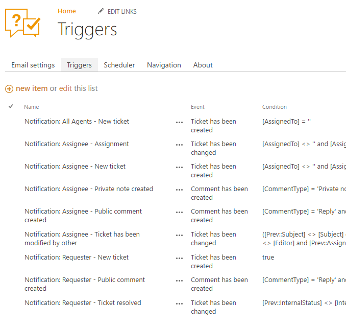
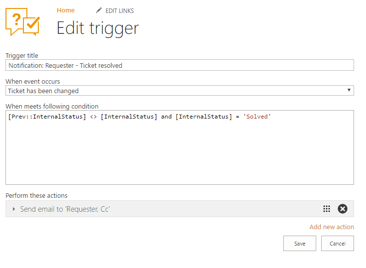
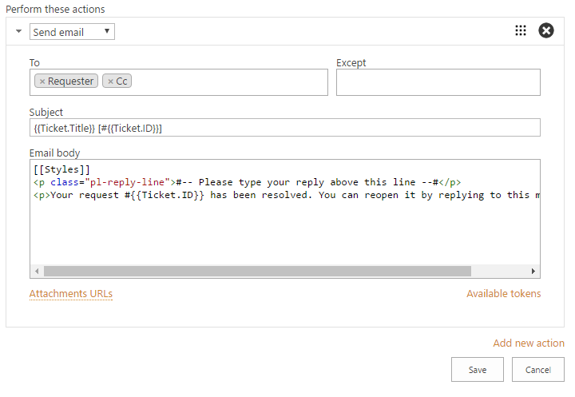
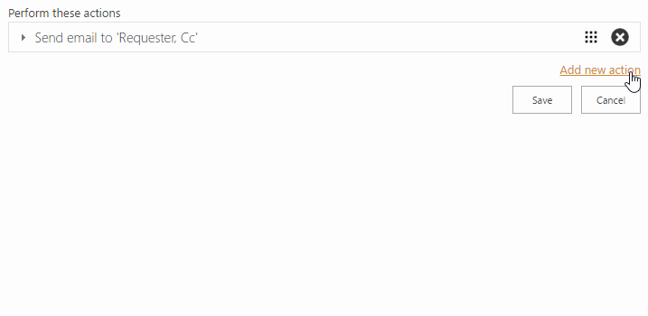
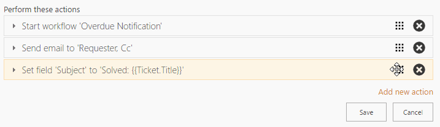

Triggers¶
Triggers allow you to set up automatic execution of arbitrary sets of actions based on events and conditions. A bunch of triggers designed for sending notifications is available out-of-the-box. Find them in the screenshot below. You can create your own triggers and define actions for them in accordance with your needs.
Navigate to the settings using the icon in the navbar:

Then click the “Triggers” tab. Here you can find the list of pre-defined triggers.

For instance, there is a built-in trigger called “Notification: Requester – Ticket resolved”. It sends a notification to a requester when the ticket status is changed to “Solved”. Let’s open this trigger for edit and see what is inside:

Trigger’s forms fields:
| Name: | Trigger’s title. |
|---|---|
| Event: | The event that raises the actions. |
| Condition: | The condition that determines whether the actions have to be executed. You can find more information about the syntax below. |
| Actions: | The list of actions that have to be executed on the specified event if the condition is “true”. |
The condition is:
[Prev::InternalStatus] <> [InternalStatus] and [InternalStatus] = 'Solved'
The condition literally says: InternalStatus is changed and InternalStatus is equal to “Solved”.
So, you can access field values of the ticket or comment using syntax: [InternalFieldName].
If the trigger’s event is “Ticket has been changed” you can also access previous values this way: [prev::InternalFieldName].
The list of actions contains a single action “Send email”. Each action in the list has a short description of what it does. This action sends an email to requester and Cc. Click the action to expand its settings:

Find the detailed description of the “Send email” action in the “Actions” section.
Events¶
- Ticket has been created
- Occurs when the ticket has been created. You cannot refer to previous values of fields in the condition of the trigger.
- Ticket has been changed
- Occurs when the ticket has been changed.
You can refer to previous values of fields in the condition by using
[prev::InternalFieldName]syntax. - Comment has been created
- Occurs when a comment has been created. You cannot refer to previous values of fields in the condition of the trigger.
Condition¶
Conditions determine whether the actions have to be executed. They support references to fields of the current item (ticket or comment) by their internal names. For example, [Title] returns the value of the Title field.
By default, lookup field returns lookup value. Use [LookupFieldName.Id] to get lookup id.
There is a number of operators and functions available in conditions, e.g. logical operators and, or, =, <>.
For the complete list see condition syntax.
Actions¶
To add a new action you can click the “Add new action” link.

There are three types of actions:
The list of actions may contain multiple actions which will be executed sequentially one by one starting from the top. To reorder actions, drag the action’s header and drop it to the desirable place.

To save changes of the trigger, click the “Save” button. To discard the changes, click the “Cancel” button.
Send Email¶
This action sends an email to multiple recipients. You can use tokens and snippets in the message’s title and body to automatically populate information on the current item.
“Send email” action has the following properties:
| To: | Required field. Defines recipients of the message. In this field you can pick a contact from the contacts list or use tokens “All agents”, “Requester”, “Cc”, “Assignee”, and “Comment author” (only for “Comment has been created” event). |
|---|---|
| Except: | Excludes the specified recipients from the “To” field. In this field you can pick a contact from the contacts list or use tokens “All agents”, “Requester”, “Cc”, “Assignee” and “Comment author” (only for “Comment has been created” event). |
| Subject: | The title of the message. In this field you can use context tokens. |
| Email body: | The body of the message. In this field you can use context tokens and snippets. |
| Attachment URLs: | |
Semicolon separated list of attachments that have to be included in the message. In this field you can use context tokens. For example, {{CurrentItem.AttachmentUrls}}. |
|
Find the complete description of the context tokens and snippets in Tokens and snippets section.
Start Workflow¶
This action starts the specified workflow.
“Start workflow” action has the following properties:
| Workflow to start: | |
|---|---|
| Required field. The name of the workflow that has to be executed. Both SharePoint Workflows 2010 and 2013 are supported. You can pick a list level workflow or a site level workflow. | |
See also
HelpDesk Actions Pack is provided with HelpDesk. Find the detailed description in Workflow customization section.
Set Field¶
This action sets the value of the public field of the ticket.
“Set field” action has following properties:
| Field name: | Required field. The name of the field that has to be changed. |
|---|---|
| Field value: | The new value of the field. In this field you can use context tokens. |